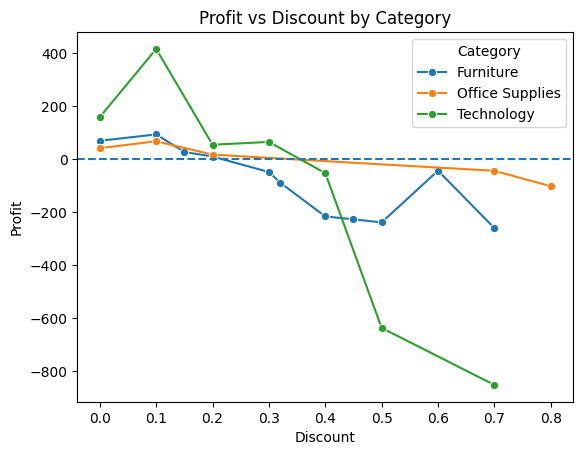
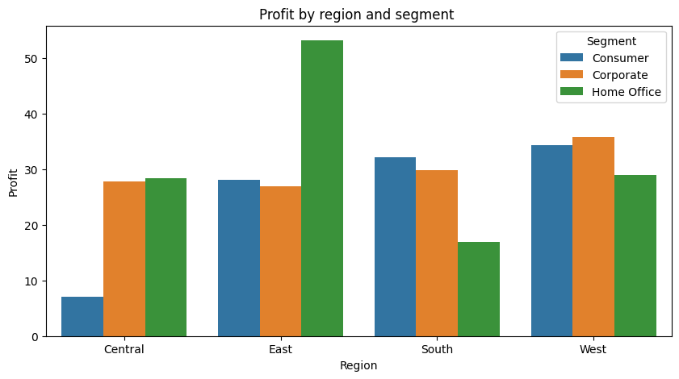
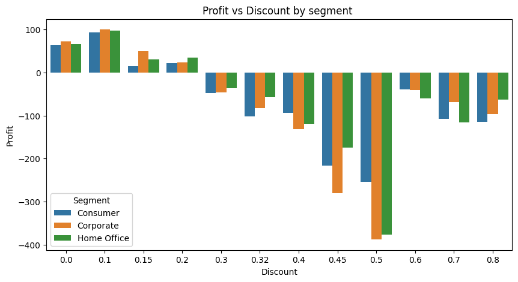
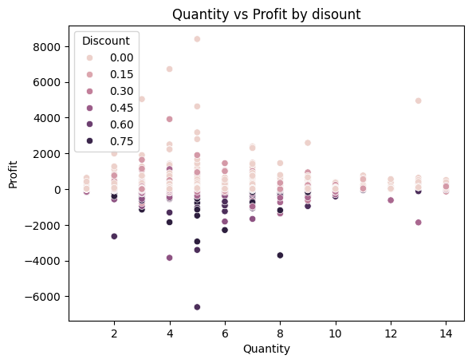

01
EV Buyer
Prediction
↗
Random Forest classification model to estimate the probability of customers purchasing an electric vehicle.
0.9353mean ROC-AUC
5-fold CV
5-fold CV
Third-year B.Sc. student in Data Science and Artificial Intelligence at IIT Guwahati, building practical skills across analytics, statistics, databases and machine learning.
A small selection of projects where I worked with real datasets, analytical questions and practical modeling.
View GitHub ↗Random Forest classification model to estimate the probability of customers purchasing an electric vehicle.
Retail analysis focused on sales, profit, discounting and regional performance to surface profitability opportunities.
One project explains where profitability breaks down; the other predicts who is likely to buy an EV—two datasets, two questions, one data science approach.




I’m Sahil Naseem, a third-year B.Sc. student in Data Science and Artificial Intelligence at IIT Guwahati.
My work sits at the intersection of data analysis, business questions and machine learning. Through coursework and projects, I’ve worked with Python, SQL, statistics, relational databases, visualization and practical modeling.
I’m looking for opportunities in Data Analytics, Business Analytics and related data-driven roles where analysis can turn messy information into something useful.
Indian Institute of Technology Guwahati
September 2024 — Present · Guwahati, AssamLoan default probability, FICO categorization and dynamic programming.
Forage · July 2026Executive-focused visualization and preparation of questions for senior leadership.
Forage · June 2026Built through coursework, projects and practical exercises — not just a list of keywords.
Python · SQL · R · C · Java
Pandas · Statistics · EDA · Data Modelling · Machine Learning · Linear Algebra
Power BI · Tableau · Microsoft Excel · Data Visualisation · Dashboards
PostgreSQL · Database Management · Git · Linux · AWS · ERP Systems
I’m looking for internships and entry-level opportunities in Data Analytics, Business Analytics and related data-driven roles.
Get in touch ↗